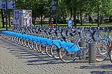

A bicycle-sharing system, bike share program, public bicycle scheme or public bike share (PBS) scheme,[3] is a shared transport service where bicycles are available for shared use by individuals at low cost.
TAGASI